One creature, six possible destinies, and a handful of systems that make each playthrough feel like your own.
หนึ่งตัวละคร หกชะตากรรม — และระบบเกมที่ทำให้ทุกการเล่นไม่เหมือนกันเลย
Every crownling carries a dormant crown. Raise it well and it stays bright — neglect it, or let the wrong crown near it, and it awakens one of five corrupted forms instead.
Raised well — the gentle, loyal path
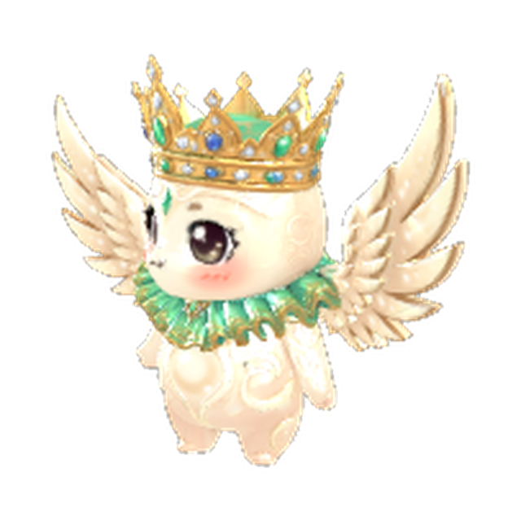
Fire & ruin
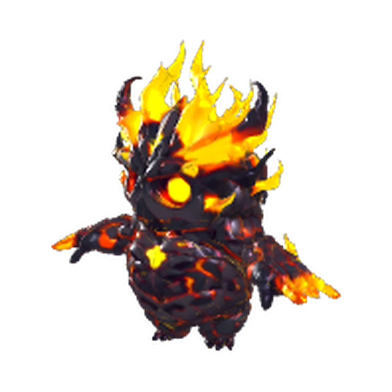
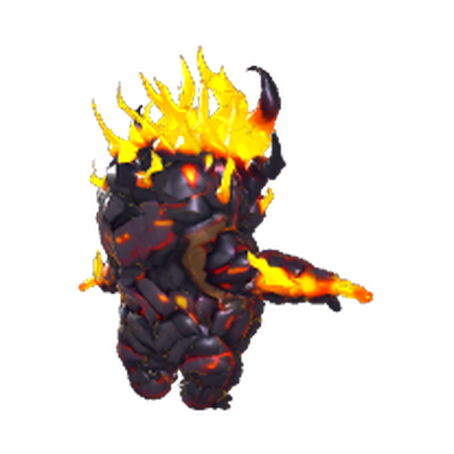
Frost & silence
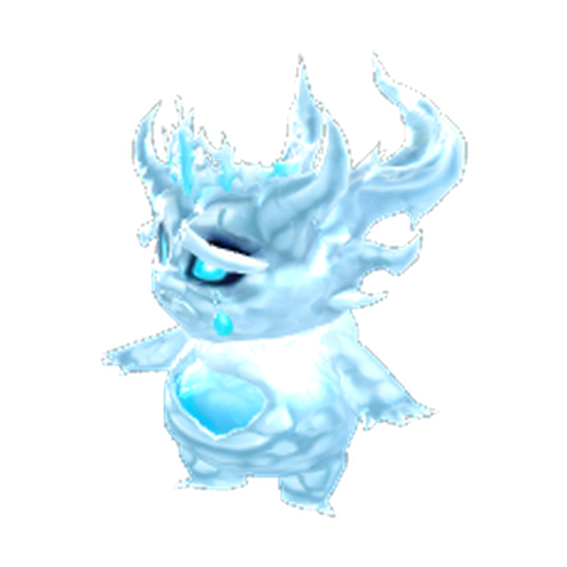
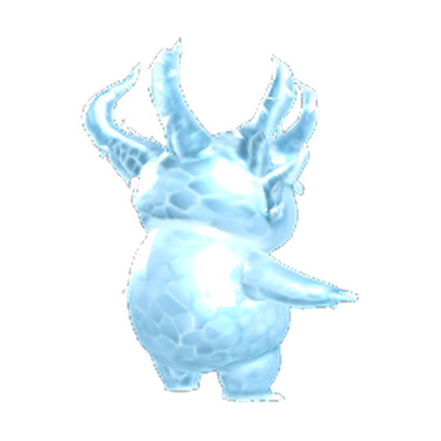
Storm & lightning
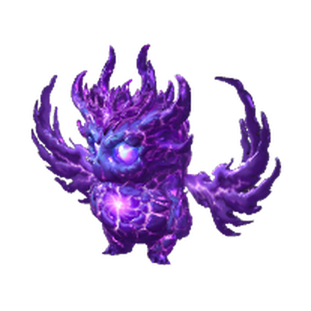
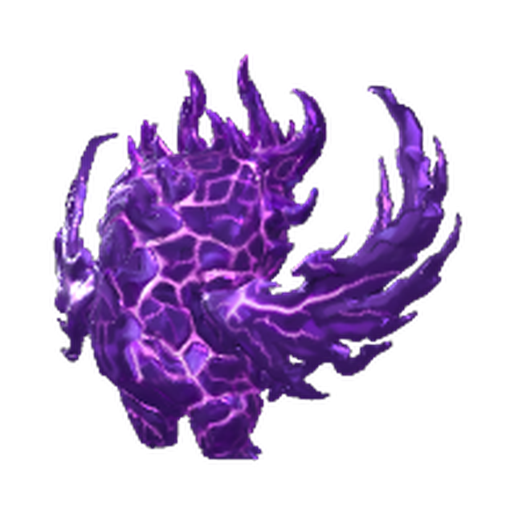
Chaos & hunger
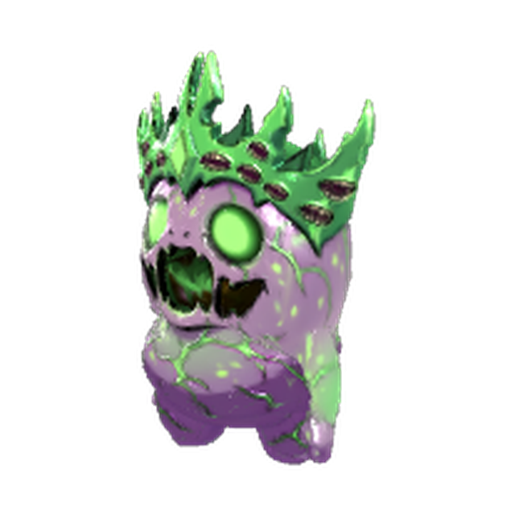
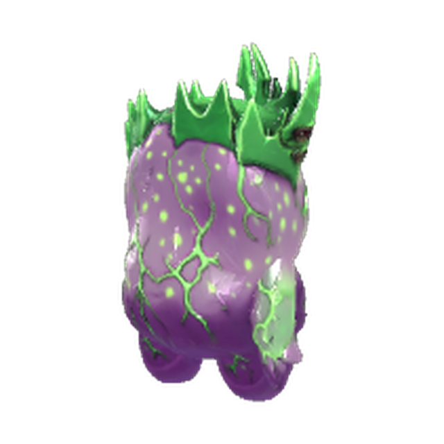
Blood & the void
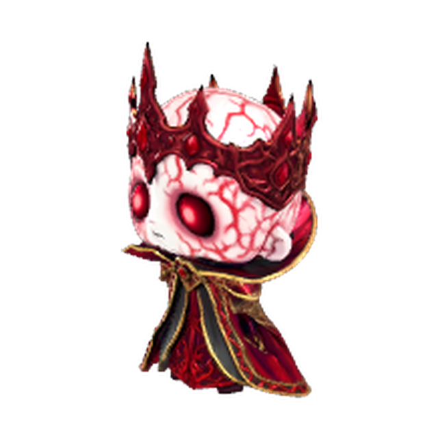
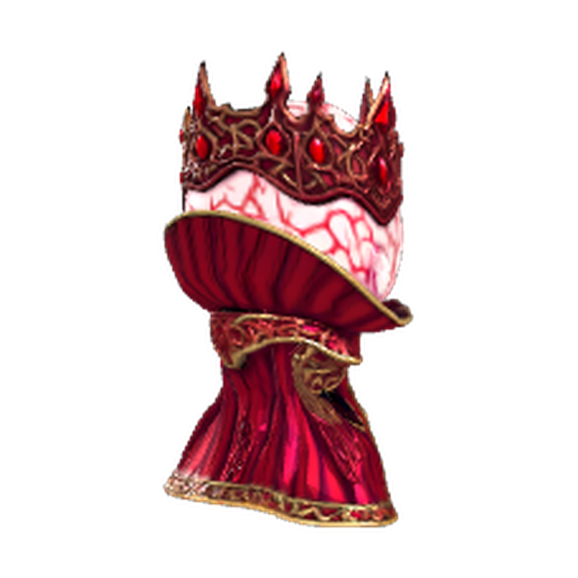
Your crownling lives on your real desktop, not in a separate app window. It grows the more you actually use your PC — no idle timers, no forced check-ins.
How you treat it decides its shape. Care and attention keep it on the bright path; neglect — or the wrong crown getting too close — pulls it toward one of five corrupted forms.
Pair two crownlings and their offspring inherit a random mix of both parents' skills. Rare trait combinations are what make a bloodline worth showing off.
Send your bloodline into the arena without needing to be online at the same time as your opponent — queue it up, and let the match resolve on its own.
Grab a training tool and (gently) whack your crownling to sharpen its reflexes. Early on it flinches and stumbles in increasingly ridiculous ways; by max level it's nearly untouchable. Every tool is cosmetic — it reshapes how your crownling defends itself, never how strong it can get.
One creature, two destinies. The exact same crownling can grow up bright and loyal, or wake up as something else entirely — same stats foundation, completely different personality and look.
Your crownling forages your actual PC for resources — safely. It only ever reads file types, counts, and ages, never contents, and it never opens, moves, or deletes anything. A desktop full of photos and music nudges it toward the light; one full of code and system files nudges it toward the dark.
Skills pass down in a random mix from both parents — not a guaranteed clone. Building a strong bloodline takes real generations, not one lucky roll.
No need to line up online with an opponent. Snapshot your crownling, send it into the arena, and check back for the result whenever you want.
Bright crownlings are sweet, encouraging, and genuinely helpful — a quiet nudge to take a break, a little celebration when you win. Dark crownlings are chaotic little gremlins — sassy, stubborn, and always a bit too pleased with themselves.
Wishlist support, art, and every system on this page are still being built and may change before release.